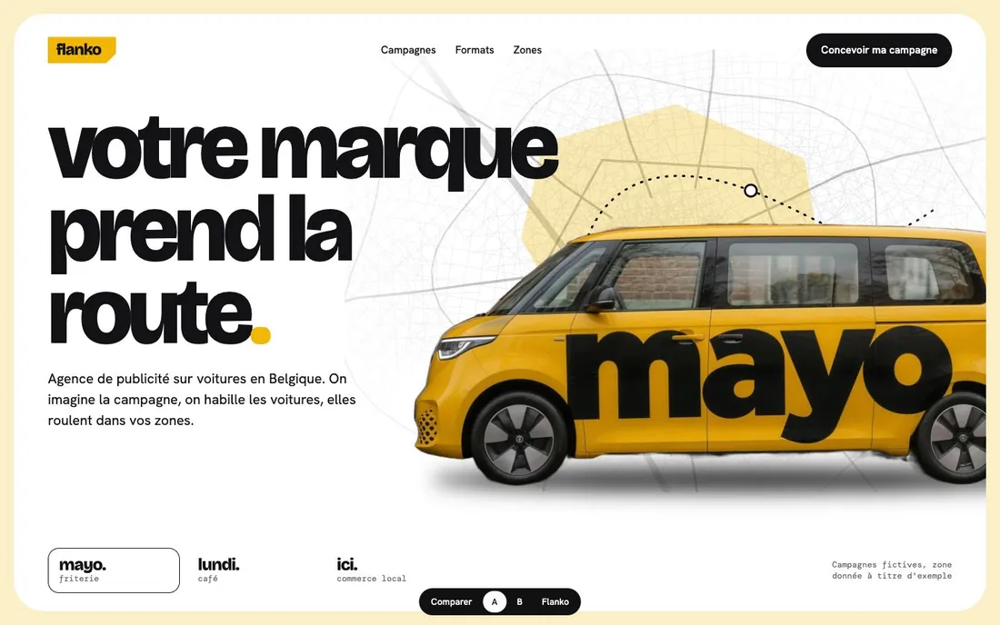
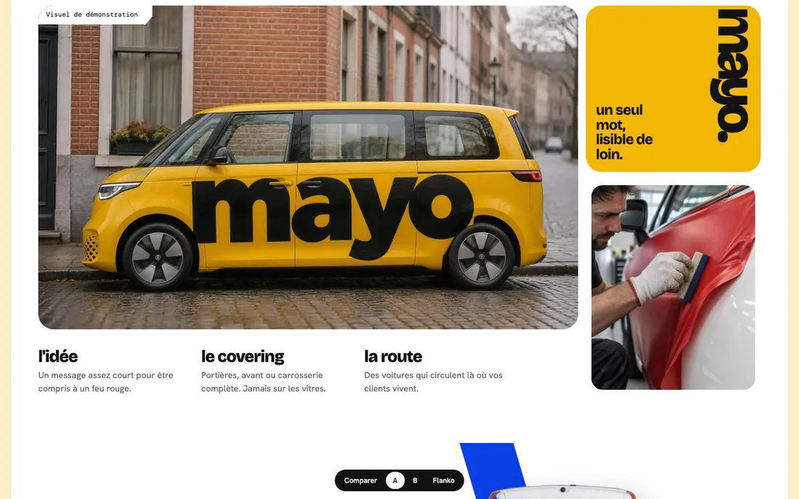
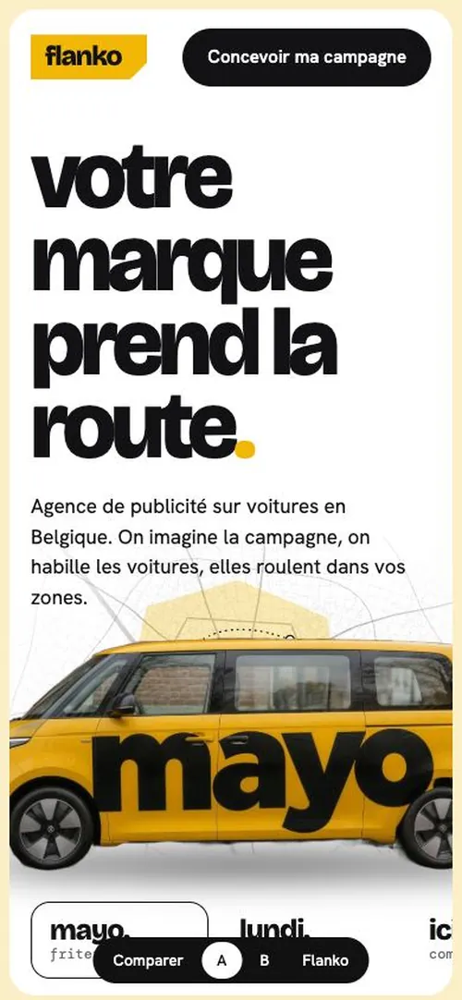
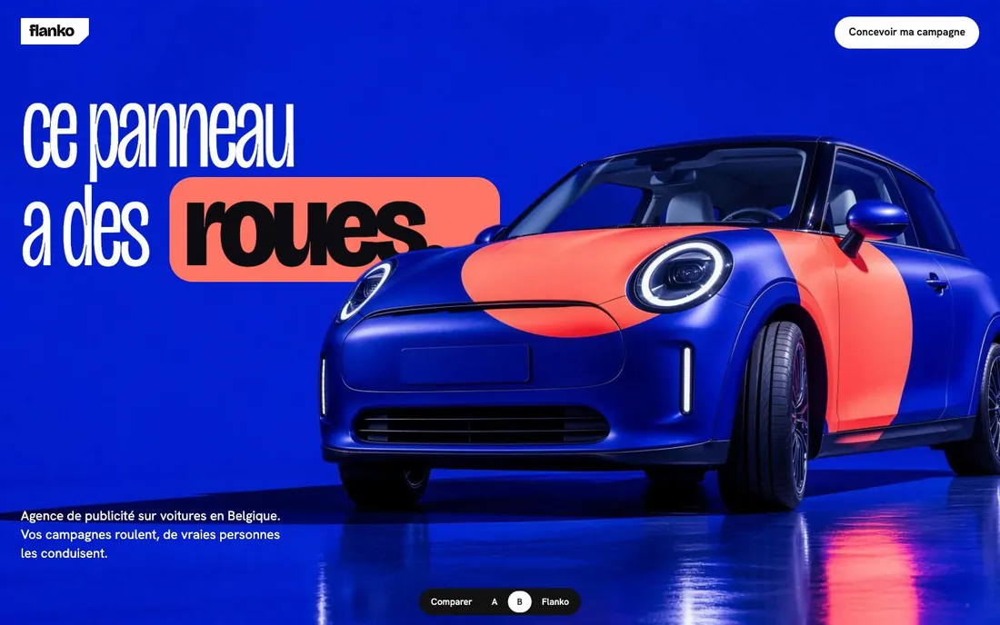
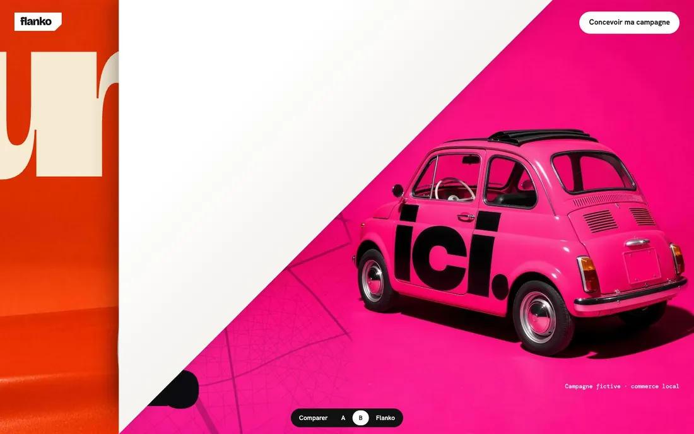
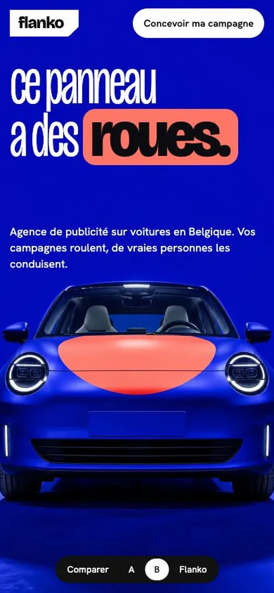
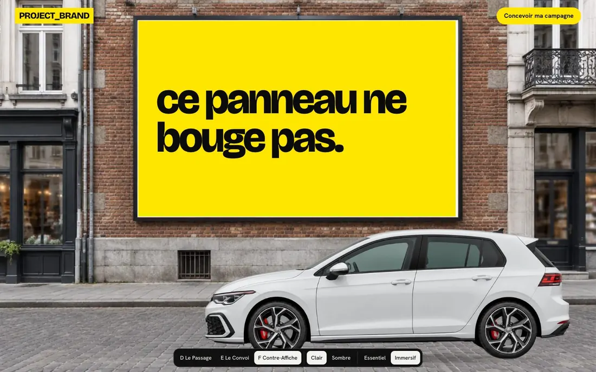

PROJECT_BRAND · aperçus à comparer · nom, marques et images provisoires
Deux façons de faire rouler une marque.
Chaque proposition montre un hero, sa version mobile et une campagne. Ouvre-les en plein écran : le mouvement fait partie du choix.
A · Unique × Flanko
Clair, aéré, précis. La couleur vient des campagnes : elle change toute l'ambiance quand on choisit une marque.

Hero desktop

Campagne

Mobile
- Réf. 6 : carte blanche, plan de ville, voiture coupée au bord
- Réf. 5 et vinyle : une couleur par campagne
- Réf. 11 : la bande sort de la voiture et traverse la page
- Flanko : typographie, coin coupé, composition mobile
Ouvrir A
B · Flanko × Noomo
Plein écran, couleurs assumées. On traverse le disque de la voiture, puis chaque campagne se décolle comme un vinyle.

Hero desktop

Campagne, vinyle décollé

Mobile
- Noomo : un monde continu, texte fin et mots gras, étiquette au curseur
- Flanko : le ton, et le coin coupé qui devient la transition
- Réf. 5 et 10 : un écran, une couleur, des mots immenses
- Réf. 7 : le mot passe derrière la voiture
Ouvrir B

Ancienne Flanko, conservée telle quelle
L'ancienne Flanko
Gardée à son adresse pour comparer.
Ouvrir FlankoCampagnes et marques fictives. Visuels créés par IA pour la démonstration, à remplacer par de vraies photos avant lancement.